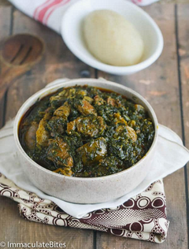

Eru recipe

Description
This is the best dish you can eat in Cameroon. It's so good it'll make you regret having spent that much years on earth not knowing about it
It's a stew of leaves, meat and fish and is served with either fufu or gari.Let's learn how to make it
Ingredients
- Okok leaves
- Water leaves
- Beef skin and meat
- Smoked fish
- Palm Oil
- salt, pices, herbs
- water
These are the steps to make it
- Wash the okok and water leaves
- Wash the beef skin and meat
- Cook the okok leaves (in water) and the beef(in water, salt, spices and herbs) for one hour
- Mix the okok leaves with the beef
- Add the water laves and palm oil
- Add the smoked fish and cook for one more hour
- When it's done, serve with gari or fufu
Back to Home Page